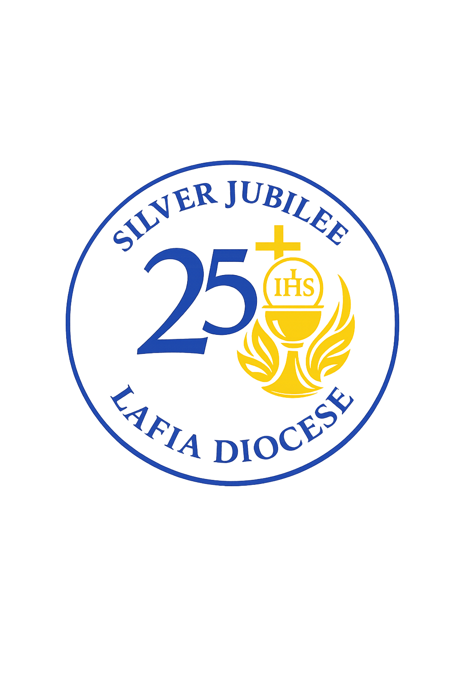

Heavenly Father,
We come before You with hearts full of gratitude, praising Your holy name for the countless blessings You have bestowed upon us.
We thank You for the gift of the Catholic Diocese of Lafia and for nourishing us in faith, hope and love through her pastoral care.
As we celebrate the silver jubilee of our diocese, we are filled with joy and gratitude for all the ways You have guided and kept us during the past twenty-five years, as One Eucharistic Family.
May the celebration of our silver jubilee renew and deepen our awareness of Your presence in our journey as a diocese.
Bless us abundantly to continue to spread Your light in the world.
Mary our mother, be our companion in our pilgrimage as a Eucharistic family.
We make our prayer through Christ our Lord.
Amen.